유통관리사-2급 (2021-08-21 기출문제)
1과목: 유통물류일반
1. 운송수단을 결정하기 전에 검토해야 할 사항에 대한 설명으로 가장 거리가 먼 것은?
- 운송할 화물이 일반화물인지 냉동화물인지 등의 화물의 종류
- 운송할 화물의 중량과 용적
- 화물의 출발지, 도착지와 운송거리
- 운송할 화물의 가격
- 운송할 화물이 보관된 물류센터의 면적
(정답률: 77%)

2. SCM 관리기법 중 JIT(Just In Time)에 대한 내용으로 옳은 것은?
- JIT는 생산, 운송시스템의 전반에서 재고부족으로 인한 위험 요소를 제거하기 위해 안전재고 수준을 최대화한다.
- JIT에서 완성품은 생산과정품(Work In Process)에 포함시키지만 부품과 재료는 포함시키지 않는다.
- 구매측면에서는 공급자의 수를 최대로 선정하여 호혜적인 작업관계를 구축한다.
- 수송단위가 소형화되고 수송빈도가 증가하므로 수송과정을 효과적으로 점검, 통제하는 능력이 중요하다.
- 창고설계 시 최대재고의 저장에 초점을 맞추는 것이지 재고이동에 초점을 맞추는 것은 아니다.
(정답률: 59%)
3. 운송에 관련된 내용으로 옳지 않은 것은?
- 해상운송은 최종목적지까지의 운송에는 한계가 있기 때문에 피시백(fishy back) 복합운송서비스를 제공한다.
- 트럭운송은 혼적화물운송(LTL: Less than Truckload) 상태의 화물도 긴급 수송이 가능하고 단거리 운송에도 경제적이다.
- 다른 수송형태에 비해 철도운송은 상대적으로 도착시간을 보증할 수 있는 정도가 높다.
- 항공운송은 고객이 원하는 지점까지의 운송을 위해 버디백(birdy back) 복합운송 서비스를 활용할 수 있다.
- COFC는 철도의 유개화차 위에 컨테이너를 싣고 수송하는 방식이다.
(정답률: 61%)
4. ROI에 대한 내용으로 옳지 않은 것은?
- 투자에 대한 이익률이다.
- 순자본(소유주의 자본, 주주의 자본 혹은 수권자본)에 대한 순이익의 비율이다.
- ROI가 높으면 제품재고에 대한 투자가 총이익을 잘 달성했다는 의미이다.
- ROI가 낮으면 자산의 과잉투자 등으로 인해 사업이 성공적이지 못하다는 의미이다.
- ROI가 높으면 효과적인 레버리지 기회를 활용했다는 의미로도 해석된다.
(정답률: 37%)
5. 아래 글상자는 포장설계의 방법 중 집합포장에 대한 설명이다. ㉠과 ㉡에서 설명하는 용어로 가장 옳은 것은?
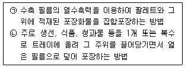
- ㉠ 밴드결속, ㉡ 테이핑
- ㉠ 테이핑, ㉡ 슬리브
- ㉠ 쉬링크, ㉡ 스트레치
- ㉠ 꺽쇠·물림쇠, ㉡ 골판지상자
- ㉠ 접착, ㉡ 슬리브
(정답률: 55%)
6. 도·소매 물류를 7R을 활용하여 효과적으로 관리하는 방법에 대한 설명으로 가장 옳지 않은 것은?
- 적절한 품질의 제품을 적시에 제공해야 한다.
- 최고의 제품을 저렴한 가격으로 제공해야 한다.
- 좋은 인상으로 원하는 장소에 제공해야 한다.
- 적정한 제품을 적절한 양으로 제공해야 한다.
- 적시에 원하는 장소에 제공해야 한다.
(정답률: 63%)
7. 기업이 외부조달을 하거나 외주를 주는 이유로 옳지 않은 것은?
- 비용 상의 이점
- 불충분한 생산능력 보유
- 리드타임, 수송, 창고비 등에 대한 높은 통제가능성
- 전문성 결여로 인한 생산 불가능
- 구매부품의 품질측면의 우수성
(정답률: 69%)
8. 인적자원관리에 관련된 능력주의와 연공주의를 비교한 설명으로 옳지 않은 것은?
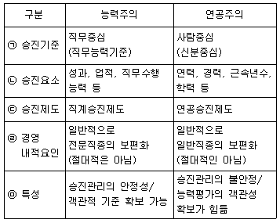
- ㉠
- ㉡
- ㉢
- ㉣
- ㉤
(정답률: 64%)
9. 포트폴리오 투자이론에 관련된 설명으로 옳지 않은 것은?
- 포트폴리오란 투자자들에 의해 보유되는 주식, 채권 등과 같은 자산들의 그룹을 말한다.
- 포트폴리오 수익률은 개별자산의 수익률에 투자비율을 곱하여 모두 합한 값이다.
- 포트폴리오 가중치는 포트폴리오의 총가치 중 특정 자산에 투자된 비율을 말한다.
- 체계적 위험은 주식을 발행한 각 기업의 경영능력, 발전가능성, 수익성 등의 변동가능성으로 개별주식에만 발생하는 위험이다.
- 비체계적 위험은 분산투자로 어느 정도 제거가 가능한 위험이다.
(정답률: 62%)
10. 조직 내에서 이루어지는 공식, 비공식적인 의사소통의 유형과 그 설명이 가장 옳지 않은 것은?
- 개선보고서와 같은 상향식 의사소통은 하위계층에서 상위계층으로 이루어진다.
- 태스크포스(task force)와 같은 하향식 의사소통은 전통적 방식의 소통이다.
- 다른 부서의 동일 직급 동료 간의 정보교환은 수평식 의사소통이다.
- 인사부서의 부장과 품질보증팀의 대리 간의 의사소통은 대각선 방식의 의사소통이다.
- 비공식 의사소통 채널의 예로 그레이프바인(grape vine)이 있다.
(정답률: 53%)
11. 아래의 글상자에서 설명하고 있는 동기부여전략으로 옳은 것은?
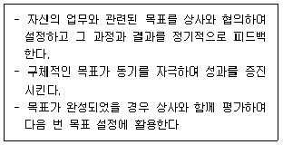
- 목표관리이론
- 직무충실화이론
- 직무특성이론
- 유연근로제
- 기대이론
(정답률: 82%)
12. 서로 다른 제품을 각각 다른 생산설비를 사용하는 것보다 공동의 생산 설비를 이용해서 생산한다면 보다 효과적이라는 이론으로 옳은 것은?
- 규모의 경제
- 분업의 원칙
- 변동비 우위의 법칙
- 범위의 경제
- 집중화 전략
(정답률: 58%)
13. 유통경영 전략계획 수립에 대한 설명으로 가장 옳지 않은 것은?
- 기업수준의 전략계획수립은 조직의 목표 및 역량과 변화하는 마케팅 기회 간의 전략적 적합성을 개발·유지하는 과정을 말한다.
- 기업수준의 전략계획수립은 기업 내에서 이루어지는 다른 모든 계획수립의 근간이 된다.
- 기업수준의 전략계획수립과정은 기업전반의 목적과 사명을 정의하는 것으로 시작된다.
- 기업수준의 전략계획이 실현될 수 있도록 마케팅 및 기타 부서들은 구체적 실행계획을 수립한다.
- 기업수준의 전략계획은 기능별 경영전략과 사업수준별 경영전략을 수립한 후 전략적 일관성에 맞게 수립해야 한다.
(정답률: 52%)
14. 유통경로에서 발생하는 각종 현상에 관한 설명으로 가장 옳지 않은 내용은?
- 유통경로의 같은 단계에 있는 경로구성원 간의 경쟁을 수평적 경쟁이라고 한다.
- 제조업자는 수직적 마케팅 시스템을 통해 도소매상의 판매자료를 공유함으로써 효율적 재고관리, 경로전반의 조정개선 등의 이점을 얻을 수 있다.
- 가전제품도매상과 대규모로 소매상에 공급하는 가전 제조업자와의 경쟁은 업태 간 경쟁이다.
- 이미지, 목표고객, 서비스 등 기업전략의 유사성 때문에 수평적 경쟁이 생기는 경우도 많다.
- 유통기업은 수직적 경쟁을 회피하기 위해 전방통합, 후방통합을 시도하기도 한다.
(정답률: 62%)
15. 기업의 과업환경에 속하지 않는 것은?
- 경쟁기업
- 고객
- 규제기관
- 협력업자
- 인구통계학적 특성
(정답률: 68%)
16. 기업의 이해관계자별 주요 관심사에 관한 설명으로 옳지 않은 것은?
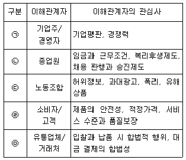
- ㉠
- ㉡
- ㉢
- ㉣
- ㉤
(정답률: 82%)
17. 청소년보호법(법률 제17761호, 2020.12.29., 타법개정) 상, 청소년유해약물에 포함되지 않는 것은?
- 주류
- 담배
- 마약류
- 고카페인 탄산음료
- 환각물질
(정답률: 83%)
18. ‘재고를 어느 구성원이 가지는가에 따라 유통경로가 만들어진다’라고 하는 유통경로 결정 이론과 관련한 내용으로 옳지 않은 것은?
- 중간상이 재고의 보유를 연기하여 제조업자가 재고를 가진다.
- 유통경로의 가장 최후시점까지 제품을 완성품으로 만들거나 소유하는 것을 미룬다.
- 자전거 제조업자가 완성품 조립을 미루다가 주문이 들어오면 조립하여 중간상에게 유통시킨다.
- 특수산업용 기계 제조업자는 주문을 받지 않는 한 생산을 미룬다.
- 다른 유통경로 구성원이 비용우위를 갖는 기능은 위양하고 자신이 더 비용우위를 갖는 일은 직접 수행한다.
(정답률: 58%)
19. 상인 도매상은 수행기능의 범위에 따라 크게 완전기능 도매상과 한정기능도매상으로 구분한다. 완전기능도매상에 해당되는 것으로 옳은 것은?
- 현금으로 거래하며 수송서비스를 제공하지 않는 현금 무배달도매상
- 제품에 대한 소유권을 가지고 제조업자로부터 제품을 취득하여 소매상에게 직송하는 직송도매상
- 우편을 통해 주문을 접수하여 제품을 배달해주는 우편 주문도매상
- 서로 관련이 있는 몇 가지 제품을 동시에 취급하는 한정상품도매상
- 트럭에 제품을 싣고 이동판매하는 트럭도매상
(정답률: 48%)
20. 소비자기본법(법률 제17290호, 2020.5.19., 타법개정) 상, 소비자중심경영의 인증 내용으로 옳지 않은 것은?
- 소비자중심경영인증의 유효기간은 그 인증을 받은 날부터 1년으로 한다.
- 소비자중심경영인증을 받은 사업자는 대통령령으로 정하는 바에 따라 그 인증의 표시를 할 수 있다.
- 소비자중심경영인증을 받으려는 사업자는 대통령령으로 정하는 바에 따라 공정거래위원회에 신청하여야 한다.
- 공정거래위원회는 소비자중심경영인증을 신청하는 사업자에 대하여 대통령령으로 정하는 바에 따라 그 인증의 심사에 소요되는 비용을 부담하게 할 수 있다.
- 공정거래위원회는 소비자중심경영을 활성화하기 위하여 대통령령으로 정하는 바에 따라 소비자중심경영 인증을 받은 기업에 대하여 포상 또는 지원 등을 할 수 있다.
(정답률: 51%)
21. 최근 국내외 유통산업의 발전상황과 트렌드로 옳지 않은것은?
- 제품설계, 제조, 판매, 유통 등 일련의 과정을 늘려 거대한 조직을 만들어 복잡한 가치사슬을 유지하고 높은 재고비용을 필요로 하는 가치사슬이 중요해졌다.
- 소비자의 구매 패턴 등을 담은 빅데이터를 기반으로 생산과 유통에 대한 의사결정이 이루어지고 있다.
- 글로벌 유통기업들은 무인점포를 만들고, 시범적으로 드론 배송서비스를 시작하였다.
- 디지털 기술 및 다양한 기술이 융합됨에 따라 온라인 플랫폼을 통하여 개인화된 제품으로 변화된 소비자 선호에 대응할 수 있게 되었다.
- VR/AR 등을 이용한 가상 스토어에서 물건을 살 수 있다.
(정답률: 81%)
22. 중간상이 행하는 각종 분류기능 중 ㉠과 ㉡에 들어갈 용어로 옳은 것은?
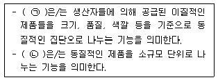
- ㉠수합(accumulation), ㉡등급(sort out)
- ㉠등급(sort out), ㉡분배(allocation)
- ㉠분배(allocation), ㉡구색(assortment)
- ㉠구색(assortment), ㉡수합(accumulation)
- ㉠수합(accumulation), ㉡분배(allocation)
(정답률: 58%)
23. 유통산업의 개념 및 경제적 역할에 대한 설명으로 가장 옳지 않은 것은?
- 유통산업이란 도매상, 소매상, 물적 유통기관 등과 같이 유통기능을 수행·지원하는 유통기구들의 집합을 의미 한다.
- 우리나라의 경우 1960년대 이후 주로 유통산업 부문 중심의 성장을 이루었으나, 1980년대 이후에는 제조업의 육성과 활성화가 중요 과제가 되었다.
- 유통산업은 국민경제 및 서비스산업 발전에 파급효과가 크고 성장잠재력이 높은 고부가가치 산업으로 평가되고 있다.
- 유통산업은 경제적으로 일자리 창출에 크게 기여하고 있는 산업이며 서비스산업 발전에도 중요한 역할을 하고 있다.
- 유통산업은 모바일 쇼핑과 같은 신업태의 등장, 유통 단계의 축소 등의 유통구조의 개선으로 상품거래비용과 소매가격하락을 통해 물가안정에도 기여하고 있다.
(정답률: 74%)
24. 마이클 포터(Michael Porter)의 산업구조분석모형(5-forces model)에 대한 설명으로 옳지 않은 것은?
- 공급자의 교섭력이 높아질수록 시장 매력도는 높아진다.
- 대체재의 유용성은 대체재가 기존 제품의 가치를 얼마나 상쇄할 수 있는지에 따라 결정된다.
- 교섭력이 큰 구매자의 압력으로 인해 자사의 수익성이 낮아질 수 있다.
- 진입장벽의 강화는 신규 진입자의 진입을 방해하는 요소가 된다.
- 경쟁기업간의 동질성이 높을수록 암묵적인 담합가능성이 높아진다.
(정답률: 53%)
25. 중간상의 사회적 존재 타당성에 대한 설명 중 그 성격이 다른 하나는?
- 제조업은 고정비가 차지하는 비율이 변동비보다 크다.
- 제조업자가 중간상과 거래하여 사회적 총 거래수가 감소한다.
- 유통업은 고정비보다 변동비의 비율이 높다.
- 중간상이 배제되고 제조업이 유통의 역할을 통합하는 것이 비용측면에서 이점이 크지 않다.
- 제조업체가 변동비를 중간상과 분담함으로써 비용면에서 경쟁 우위를 차지할 수 있다.
(정답률: 33%)
2과목: 상권분석
26. 소매점 개점을 위한 투자계획에 관한 설명으로 가장 옳지 않은 것은?
- 투자계획은 개점계획을 자금계획과 손익계획으로 계수화한 것이다.
- 자금계획은 자금조달계획과 자금운영계획으로 구성된다.
- 손익계획은 수익계획과 비용계획으로 구성된다.
- 자금계획은 투자활동 현금흐름표, 손익계획은 연도별 손익계산서로 요약할 수 있다.
- 물가변동이 심하면 경상가격 대신 불변가격을 적용하여 화폐가치 변동을 반영한다.
(정답률: 26%)
27. 아래 글상자 속의 설명에 해당하는 상업입지로서 가장 옳은 것은?
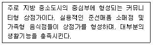
- 거점형 상업입지
- 광역형 상업입지
- 지역중심형 상업입지
- 지구중심형 상업입지
- 근린형 상업입지
(정답률: 42%)
28. 점포를 개점할 때 고려해야할 전략적 사항에 대한 설명으로 옳지 않은 것은?
- 점포는 단순히 하나의 물리적 시설이 아니고 소비자들의 생활과 직결되며, 라이프스타일에도 영향을 미친다.
- 상권의 범위가 넓어져서 규모의 경제를 유발할 수 있기 때문에, 점포의 규모는 클수록 유리하다.
- 점포개설로 인해 인접 주민 또는 소비자단체의 민원제기나 저항이 일어나지 않도록 사전에 대비하여야 한다.
- 취급하는 상품의 종류에 따라 소비자의 이동거리에 대한 저항감이 다르기 때문에 상권의 범위가 달라진다.
- 경쟁관계에 있는 다른 점포의 규모나 위치를 충분히 검토하여야 한다.
(정답률: 74%)
29. 상권설정이 필요한 이유로 가장 옳지 않은 것은?
- 지역내 고객의 특성을 파악하여 상품구색과 촉진의 방향을 설정하기 위해
- 잠재수요를 파악하기 위해
- 구체적인 입지계획을 수립하기 위해
- 점포의 접근성과 가시성을 높이기 위해
- 업종선택 및 업태개발의 기본 방향을 확인하기 위해
(정답률: 52%)
30. 현재 “상가건물 임대차보호법”(법률 제17471호, 2020.7.31., 일부개정) 등 관련 법규에서 규정하고 있는 상가임대료의 인상률 상한(청구당시의 차임 또는 보증금 기준)으로 옳은 것은?
- 3%
- 4%
- 5%
- 7%
- 9%
(정답률: 59%)
31. 입지후보지에 대한 예상 매출금액을 계량적으로 추정하기 위한 상권분석기법이 아닌 것으로만 짝지어진 것은?
- 유사점포법(analog method), 허프모델(Huff model)
- 허프모델(Huff model), 체크리스트법(Checklist method)
- 티센다각형(Thiessen polygon)모형, 체크리스트법(Checklist method)
- 회귀분석(regression analysis)모형, 허프모델(Huff model)
- 다항로짓모델(multinomial logit model), 유사점포법(analog method)
(정답률: 52%)
32. 소매점의 입지와 상권에 대한 설명으로 가장 옳은 것은?
- 입지 평가에는 점포의 층수, 주차장, 교통망, 주변 거주 인구 등을 이용하고, 상권 평가에는 점포의 면적, 주변 유동인구, 경쟁점포의 수 등의 항목을 활용한다.
- 입지는 점포를 이용하는 소비자들이 분포하는 공간적 범위 또는 점포의 매출이 발생하는 지역 범위를 의미한다.
- 상권은 점포를 경영하기 위해 선택한 장소 또는 그 장소의 부지와 점포 주변의 위치적 조건을 의미한다.
- 입지를 강화한다는 것은 점포가 더 유리한 조건을 갖출수 있도록 점포의 속성들을 개선하는 것을 의미한다.
- 입지는 일정한 공간적 범위(boundary)로 표현되고 상권은 일정한 위치를 나타내는 주소나 좌표를 가지는 점(point)으로 표시된다.
(정답률: 40%)
33. 시계성 관점에서 상대적으로 좋은 입지에 대한 설명으로 가장 옳지 않은 것은?
- 차량 이용보다는 도보의 경우에 더 먼 거리에서부터 인식할 수 있게 해야 한다.
- 간판은 눈에 띄기 쉬운 크기와 색상을 갖춰야 한다.
- 건물 전체가 눈에 띄는 것이 효과적이다.
- 교외형인 경우 인터체인지, 대형 교차로 등을 기점으로 시계성을 판단한다.
- 주차장의 진입로를 눈에 띄게 하는 것도 중요하다.
(정답률: 60%)
34. 지도작성체계와 데이터베이스관리체계의 결합으로 상권 분석의 유용한 도구가 되고 있는 지리정보시스템(GIS)의 기능에 대한 설명으로 옳은 것은?
- 버퍼(buffer) - 지도상에서 데이터를 조회하여 표현하고, 특정 공간기준을 만족시키는 지도를 얻기 위해 조회도구로써 지도를 사용하는 것이다.
- 주제도(thematic map) 작성 - 속성정보를 요약하여 표현한 지도를 작성하는 것이며, 면, 선, 점의 형상으로 구성된다.
- 위상 - 지리적인 형상을 표현한 지도상에 데이터의 값과 범위를 할당하여 지도를 확대·축소하는 등의 기능이다.
- 데이터 및 공간조회 - 어떤 지도형상, 즉 점이나 선혹은 면으로부터 특정한 거리 이내에 포함되는 영역을 의미하며, 면의 형태로 나타나 상권 혹은 영향권을 표현하는데 사용될 수 있다.
- 프레젠테이션 지도작업 - 공간적으로 동일한 경계선을 가진 두 지도 레이어들에 대해 하나의 레이어에 다른 레이어를 겹쳐 놓고 지도 형상과 속성들을 비교하는 기능이다.
(정답률: 35%)
35. 동일하거나 유사한 업종은 서로 멀리 떨어져 있는 것보다 가까이 모여 있는 것이 고객을 유인할 수 있다는 입지 평가의 원칙으로 옳은 것은?
- 보충가능성의 원칙
- 점포밀집의 원칙
- 동반유인의 원칙
- 고객차단의 원칙
- 접근 가능성의 원칙
(정답률: 64%)
36. 한 도시 내 상권들의 계층성에 대한 설명으로 가장 옳지 않은 것은?
- 지역상권은 보통 복수의 지구상권을 포함한다.
- 지역상권은 대체로 도시의 행정구역과 일치하기도 한다.
- 일반적으로 점포상권은 점포가 입지한 지구의 상권보다 크지 않다.
- 같은 지구 안의 점포들은 특성이 달라도 상권은 거의 일치한다.
- 지방 중소도시의 지역상권은 도시 중심부의 지구상권과 거의 일치한다.
(정답률: 49%)
37. 페터(R. M. Petter)의 공간균배의 원리에 대한 내용으로 가장 옳지 않은 것은?
- 경쟁점포들 사이의 상권분배 결과를 설명한다.
- 상권 내 소비자의 동질성과 균질분포를 가정한다.
- 상권이 넓을수록 경쟁점포들은 분산 입지한다.
- 수요의 교통비 탄력성이 클수록 경쟁점포들은 집중 입지한다.
- 수요의 교통비 탄력성이 0(영)이면 호텔링(H. Hotelling) 모형의 예측결과가 나타난다.
(정답률: 41%)
38. 상권분석은 지역분석과 부지분석으로 나누어진다. 다음 중 지역분석의 분석항목 만으로 구성된 것은?
- 기후·지형·경관, 용도지역·용적률, 기존 건물의 적합성, 금융 및 조세 여건
- 인구변화 추세, 기후·지형·경관, 도로망·철도망, 금융 및 조세 여건
- 용도지역·용적률, 기존 건물의 적합성, 인구변화 추세, 도로망·철도망
- 인구변화 추세, 민원발생의 소지, 토지의 지형·지질·배수, 금융 및 조세 여건
- 민원발생의 소지, 용도지역·용적률, 도로망·철도망, 공익설비 및 상하수도
(정답률: 54%)
39. 지역시장의 매력도를 분석할 때 소매포화지수(IRS)와 시장성장잠재력지수(MEP)를 활용할 수 있다. 입지후보가 되는 지역시장의 성장가능성은 낮지만, 시장의 포화 정도가 낮아 기존 점포간의 경쟁이 치열하지 않은 경우로서 가장 옳은 것은?
- 소매포화지수(IRS)와 시장성장잠재력지수(MEP)가 모두 높은 경우
- 소매포화지수(IRS)는 높지만 시장성장잠재력지수(MEP)가 낮은 경우
- 소매포화지수(IRS)는 낮지만 시장성장잠재력지수(MEP)가 높은 경우
- 소매포화지수(IRS)와 시장성장잠재력지수(MEP)가 모두 낮은 경우
- 소매포화지수(IRS)와 시장성장잠재력지수(MEP)만으로는 판단할 수 없다.
(정답률: 43%)
40. 일반적인 백화점의 입지와 소매전략에 관한 설명으로 가장 옳지 않은 것은?
- 입지조건에 따라 도심백화점, 터미널백화점, 쇼핑센터 등으로 구분할 수 있다.
- 대상 지역의 주요산업, 인근지역 소비자의 소비행태 등을 분석해야 한다.
- 선호하는 브랜드를 찾아다니면서 이용하는 소비자가 존재함을 인지해야 한다.
- 상품 구색의 종합화를 통한 원스톱 쇼핑보다 한 품목에 집중해야 한다.
- 집객력이 높은 층을 고려한 매장 배치나 차별화가 중요하다.
(정답률: 73%)
41. 업종형태와 상권과의 관계에 대한 아래의 내용 중에서 옳지 않은 것은?
- 동일 업종이라 하더라도 점포의 규모나 품목의 구성에 따라 상권의 범위가 달라진다.
- 선매품을 취급하는 소매점포는 보다 상위의 소매 중심지나 상점가에 입지하여 넓은 범위의 상권을 가져야 한다.
- 전문품을 취급하는 점포의 경우 고객이 지역적으로 밀집되어 있으므로 상권의 밀도는 높고 범위는 좁은 특성을 갖고 있다.
- 상권의 범위가 넓을 때는, 상품품목 구성의 폭과 깊이를 크게 하고 다목적구매와 비교구매가 용이하게 하는 업종/업태의 선택이 필요하다.
- 생필품의 경우 소비자의 구매거리가 짧고 편리한 장소에서 구매하려 함으로 이런 상품을 취급하는 업태는 주택지에 근접한 입지를 취하는 것이 좋다.
(정답률: 64%)
42. 상권 조사 및 분석에 관한 설명으로서 가장 옳지 않은 것은?
- 유추법을 활용해 신규점포의 수요를 예측할 수 있다.
- 고객스포팅기법(CST)을 활용하여 상권의 범위를 파악 할 수 있다.
- 이용가능한 정보와 상권분석 결과의 정확성은 역U자 (즉, ∩)형 관계를 갖는다.
- 동일한 결론을 얻는데 적용한 분석기법이 다양할수록 분석결과의 신뢰도가 높다.
- 회귀분석을 통해 복수의 변수들 각각이 점포 수요에 미치는 영향을 추정할 수 있다.
(정답률: 56%)
43. 쇼핑센터의 공간구성요소들 중에서 교차하는 통로를 연결하며 원형의 광장, 전이공간, 이벤트 장소가 되는 것은?
- 통로(path)
- 결절점(node)
- 지표(landmark)
- 구역(district)
- 에지(edge)
(정답률: 47%)
44. 크리스탈러(Christaller)의 중심지이론과 관련된 설명으로 가장 옳지 않은 것은?
- 중심지란 배후지의 거주자들에게 재화와 서비스를 제공하는 상업기능이 밀집된 장소를 말한다.
- 배후지란 중심지에 의해 서비스를 제공받는 주변지역으로서 구매력이 균등하게 분포하고 끝이 없이 동질적인 평지라고 가정한다.
- 중심지기능의 최대도달거리(도달범위)는 중심지에서 제공되는 상품의 가격과 소비자가 그것을 구입하는 데드는 교통비에 의해 결정된다.
- 도달범위란 중심지 활동이 제공되는 공간적 한계를 말하는데 중심지로부터 어느 재화에 대한 수요가 0이 되는 곳까지의 거리를 의미한다.
- 상업중심지의 정상이윤 확보에 필요한 최소한의 수요를 발생시키는 상권범위를 최대수요 충족거리라고 한다.
(정답률: 47%)
45. 빅데이터의 유용성이 가장 높은 상권분석의 영역으로 가장 옳은 것은?
- 경쟁점포의 파악
- 상권범위의 설정
- 상권규모의 추정
- 고객맞춤형 전략의 수립
- 점포입지의 적합성 평가
(정답률: 59%)
3과목: 유통마케팅
46. 유통마케팅 성과 평가에 대한 설명으로 가장 옳지 않은 것은?
- 유통마케팅 성과측정 방법은 크게 재무적 방법과 마케팅적 방법으로 나눌 수 있다.
- 재무적 방법은 회계 데이터를 기초로 성과를 측정한다.
- 마케팅적 방법은 주로 고객들로부터 수집된 데이터를 이용하여 성과를 측정한다.
- 마케팅적 방법은 과거의 성과를 보여주지 못하지만 미래를 예측할 수 있다는 장점이 있다.
- 재무적 방법과 마케팅적 방법을 상호보완적으로 활용하여 측정하는 것이 효과적이다.
(정답률: 68%)
47. 아래 글상자의 상황에서 A사가 선택할 수 있는 분석방법으로 가장 옳은 것은?
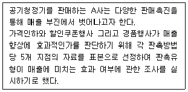
- 요인분석(factor analysis)
- 회귀분석(regression analysis)
- 다차원척도법(MDS, Multi-Dimensional Scaling)
- 표적집단면접법(FGI, Focus Group Interview)
- 분산분석(ANOVA, analysis of variance)
(정답률: 33%)
48. 촉진믹스에 대한 설명으로 옳지 않은 것은?
- 광고는 커뮤니케이션을 위한 직접적인 비용을 지불한다는 점에서 홍보(publicity)와 구분된다.
- 인적판매는 소비자 유형별로 개별화된 정보를 전달할 수 있다.
- 인적판매의 경우 대체로 타 촉진믹스에 비해 고비용이 발생한다.
- 판매촉진의 주된 목적은 제품에 대한 체계적이고 설득력 있는 정보를 제공하는 것이다.
- 광고는 제품 또는 서비스 정보의 비대면적 전달방식이다.
(정답률: 37%)
49. 아래 글상자는 로열티(고객충성도)의 유형을 설명하고 있다. ㉠, ㉡, ㉢에 들어갈 용어를 순서대로 나열한 것으로 옳은 것은?
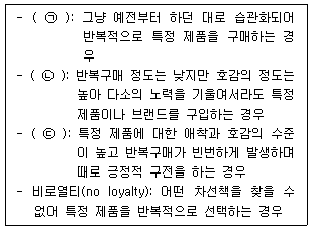
- ㉠ 잠재적 로열티, ㉡ 초우량 로열티, ㉢ 타성적 로열티
- ㉠ 초우량 로열티, ㉡ 타성적 로열티, ㉢ 잠재적 로열티
- ㉠ 타성적 로열티, ㉡ 잠재적 로열티, ㉢ 초우량 로열티
- ㉠ 잠재적 로열티, ㉡ 타성적 로열티, ㉢ 초우량 로열티
- ㉠ 초우량 로열티, ㉡ 잠재적 로열티, ㉢ 타성적 로열티
(정답률: 54%)
50. 고객서비스에 대한 설명으로 가장 옳지 않은 것은?
- 고객서비스는 고객에게 만족스러운 쇼핑경험을 제공하기 위해 소매업체가 수행하는 일련의 활동과 프로그램을 의미한다.
- 고객서비스는 소비자들이 구매한 상품에서 느낄 수 있는 가치를 증진시킨다.
- 소매업체는 보다 많은 단기적 이익을 추구하려는 전술적 관점에서 고객서비스를 제공한다.
- 좋은 고객서비스는 경쟁사가 모방하기 어렵고 고객들이 점포를 다시 찾게 만드는 전략적 이점을 제공한다.
- 훌륭한 고객서비스 제공을 통해 점포들은 상품을 차별화하고 고객충성도를 구축하며 지속가능한 경쟁 우위를 확보하려고 한다.
(정답률: 69%)
51. 판매원의 고객서비스와 판매업무활동에 대한 설명으로 가장 옳지 않은 것은?
- 판매원의 판매업무활동은 고객에게 상품에 대한 효용을 설명함으로써 구매결정을 내리도록 설득하는 것을 의미한다.
- 개별 소비자의 구매 성향에 맞게 고객서비스를 조정하는 고객화 접근법(customization)은 최소화된 비용으로 고객을 설득 시킬 수 있는 직접적 판매활동이다.
- 전체 고객집단에 대하여 동일한 고객서비스를 제공하는 것을 표준화 접근법(standardization)이라 한다.
- 판매업무 활동의 마지막 단계는 고객의 니즈에 부합하면서 판매가 만족스럽게 이루어지도록 하는 판매 종결(closing)기능이다.
- 고객으로부터 얻은 정보를 기업에게 전달하는 역할도 판매업무활동의 하나이다.
(정답률: 42%)
52. 성공적인 고객관계관리(CRM)의 도입과 실행을 위해 고려해야 할 사항으로 옳지 않은 것은?
- 고객을 중심으로 모든 거래 데이터를 통합해야 한다.
- 고객의 정의와 고객그룹별 관리방침을 수립해야 한다.
- 고객관계관리는 전략적 차원이 아닌 단순 정보기술 수준에서 활용해야 한다.
- 고객 분석에 필요한 고객의 상세정보를 수집해야 한다.
- 고객 분석결과를 활용할 수 있도록 제반 업무절차를 정립하고 시행해야 한다.
(정답률: 70%)
53. 고객관계관리(CRM)에 기반한 마케팅활동으로 가장 옳지 않은 것은?
- 비용을 최소화할 수 있는 고객확보 활동
- 고객과의 신뢰를 쌓아가는 전략적 마케팅 활동
- 수익성 높은 고객의 분류 및 표적화마케팅
- 중간상을 배제한 고객과의 직접적·개별적 커뮤니케이션
- 교차판매와 상향판매의 기회 증대 및 활용
(정답률: 43%)
54. 아래 글상자 ㉠, ㉡, ㉢에 들어갈 용어로 옳은 것은?
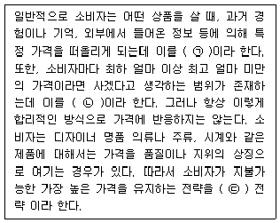
- ㉠ 준거가격, ㉡ 할증가격, ㉢ 수요점화가격수준
- ㉠ 준거가격, ㉡ 명성가격, ㉢ 할증가격
- ㉠ 준거가격, ㉡ 명성가격, ㉢ 수요점화가격수준
- ㉠ 준거가격, ㉡ 수요점화가격수준, ㉢ 명성가격
- ㉠ 할증가격, ㉡ 준거가격, ㉢ 수요점화가격수준
(정답률: 53%)
55. 아래 글상자 보기 중 머천다이저(MD)가 상품을 싸게 구매할 수 있는 일반적인 상황을 모두 고른 것은?
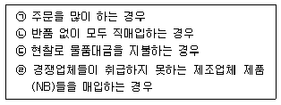
- ㉠, ㉡
- ㉠, ㉢
- ㉠, ㉣
- ㉠, ㉡, ㉢
- ㉠, ㉡, ㉢, ㉣
(정답률: 48%)
56. 다음 중 머천다이징(merchandising)을 뜻하는 의미로 가장 옳은 것은?
- 상품화계획
- 상품구매계획
- 재고관리계획
- 판매활동계획
- 물류활동계획
(정답률: 55%)
57. 제품구색의 변화에 초점을 맞춘 소매업태이론으로서, 소매상은 제품구색이 넓은 소매업태에서 전문화된 좁은 구색의 소매업태로 변화되었다가 다시 넓은 구색의 소매 업태로 변화되어 간다고 설명하는 이론으로 가장 옳은 것은?
- 소매수명주기이론
- 소매변증법이론
- 소매아코디언이론
- 소매차륜이론
- 소매진공이론
(정답률: 69%)
58. 아래 글상자에서 수직적 경쟁과 관련하여 옳은 내용만을 모두 나열한 것은?
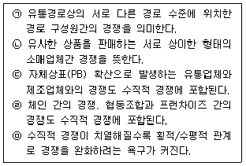
- ㉠, ㉡, ㉢
- ㉡, ㉢, ㉤
- ㉠, ㉢, ㉤
- ㉡, ㉢, ㉣
- ㉢, ㉣, ㉤
(정답률: 64%)
59. 다음 중 온·오프라인(O2O) 유통전략을 실행한 결과의 사례로서 가장 옳지 않은 것은?
- 온라인 몰을 통해서 구매한 식품을 근처 오프라인 매장에서 원하는 시간에 집으로 배송 받음
- 모바일 앱을 통해 영화·TV프로그램 등의 콘텐츠를 구매하고 TV를 통해 시청함
- PC나 모바일 앱으로 상품을 주문한 후 원하는 날짜 및 시간에 점포에 방문하여 픽업함
- 온라인을 통해 구매한 제품에 대해 환불을 신청한 후 편의점을 통해 제품 반품함
- 모바일 지갑 서비스를 통해 쿠폰을 다운받아 매장에서 결제할 때 사용함
(정답률: 63%)
60. 최근 우리나라에서 찾아볼 수 있는 소매경영환경의 변화로 가장 옳지 않은 것은?
- 소비자의 편의성(convenience)추구 증대
- 중간상 상표의 매출 증대
- 온라인채널의 비약적 성장
- 하이테크(hi-tech)형 저가 소매업으로의 시장통합
- 파워 리테일러(power retailer)의 영향력 증대
(정답률: 41%)
61. 엔드진열(end cap display)에 대한 설명으로 가장 옳지 않은 것은?
- 진열된 상품의 소비자들에 대한 노출도가 높다.
- 소비자들을 점내로 회유시키는 동시에 일반 매대로 유인하는 역할을 한다.
- 생활제안 및 계절행사 등을 통해 매력적인 점포라는 인식을 심어줄 수 있다.
- 상품정돈을 하지 않으므로 작업시간이 절감되고 저렴한 특가품이라는 인상을 준다.
- 고마진 상품진열대로서 활용하여 이익 및 매출을 높일 수 있다.
(정답률: 57%)
62. 중간상을 비롯한 유통경로 구성원들에게 제공하는 판매 촉진 방법으로 옳지 않은 것은?
- 중간상 가격할인
- 협력광고
- 판매원 교육
- 지원금
- 충성도 프로그램
(정답률: 48%)
63. 레이아웃의 유형 중 격자형 점포배치(grid layout)가 갖는 상대적 특성으로 가장 옳지 않은 것은?
- 비용 대비 효율성이 매우 높다.
- 공간의 낭비를 크게 줄일 수 있다.
- 심미적으로 가장 우수한 배열은 아니다.
- 고객의 충동구매를 효과적으로 자극한다.
- 같은 면적에 상대적으로 더 많은 상품을 진열할 수 있다.
(정답률: 56%)
64. 아래 글상자에서 공통적으로 설명하는 가격전략은?
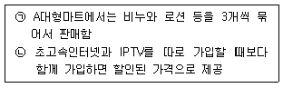
- 종속제품 가격전략(captive product pricing)
- 부산물 가격전략(by-product pricing)
- 시장침투 가격전략(market-penetration pricing)
- 묶음제품 가격전략(product-bundle pricing)
- 제품라인 가격전략(product line pricing)
(정답률: 68%)
65. 유통시장을 세분화할 때 세분화된 시장이 갖추어야 할 요건으로 가장 옳지 않은 것은?
- 세분화된 시장의 크기나 규모, 구매력의 정도가 측정 가능해야 함
- 세분시장별 수익성을 보장하기 위한 시장성이 충분해야 함
- 마케팅 활동을 통해 세분화된 시장의 소비자에게 효과적으로 접근할 수 있어야 함
- 자사가 세분화된 시장에서 높은 경쟁우위를 갖고 있어야 함
- 세분시장별 효과적인 마케팅 믹스가 개발될 수 있어야 함
(정답률: 51%)
66. 점포구성에 대한 설명으로 가장 옳지 않은 것은?
- 점포는 상품을 판매하는 매장과 작업장, 창고 등의 후방으로 구성된다.
- 점포를 구성하는 방법, 배치 방법을 레이아웃이라 한다.
- 점포 구성 시 고객의 주동선, 보조 동선, 순환동선 모두를 고려해야 한다.
- 점포 레이아웃 안에서 상품을 그룹핑하여 진열 순서를 결정하는 것을 조닝(zoning)이라 한다.
- 명확한 조닝 구성을 위해 외장 출입구 및 점두 간판의 설치 위치를 신중하게 결정해야 한다.
(정답률: 34%)
67. 다음 중 자체상표(private brand) 상품의 장점으로 가장 옳지 않은 것은?
- 다른 곳에서는 구매할 수 없는 상품이기 때문에 차별화된 상품화 가능
- 유통기업이 누릴 수 있는 마진폭을 상대적으로 높게 책정 가능
- 유통단계를 축소시킴으로써 비교적 저렴한 가격으로 판매 가능
- 유통기업이 전적으로 권한을 갖기 때문에 재고소요량, 상품회전율 등의 불확실성 제거 가능
- 유사한 전국상표 상품 옆에 저렴한 자체상표 상품을 나란히 진열함으로써 판매촉진효과 획득 가능
(정답률: 35%)
68. 아래 ㉠과 ㉡에 들어갈 성장전략으로 알맞게 짝지어진 것은?
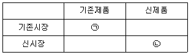
- ㉠ 시장침투전략, ㉡ 제품개발전략
- ㉠ 시장침투전략, ㉡ 다각화전략
- ㉠ 시장개발전략, ㉡ 제품개발전략
- ㉠ 시장개발전략, ㉡ 다각화전략
- ㉠ 수직적통합전략, ㉡ 신제품전략
(정답률: 51%)
69. 다음 중 판매를 시도하기 위해 고객에게 다가가는 고객접근 기술로 가장 옳지 않은 것은?
- 고객에게 명함을 전달하며 공식적으로 접근하는 상품 혜택 접근법
- 판매하고자 하는 상품을 고객에게 제시하며 주의와 관심을 환기시키는 상품 접근법
- 고객의 관심과 흥미를 유발시켜 접근해 나가는 환기 접근법
- 고객에게 가치 있는 무언가를 무료로 제공하면서 접근하는 프리미엄 접근법
- 이전에 구매한 상품에 대한 정보제공이나 조언을 해주며 접근하는 서비스 접근법
(정답률: 54%)
70. 다음 중 각 상품수명주기에 따른 관리전략을 연결한 것으로 옳지 않은 것은?
- 도입기 - 기본형태의 상품 출시
- 성장기 - 상품 확대, 서비스 향상
- 성숙기 - 브랜드 및 모델의 통합, 품질보증의 도입
- 쇠퇴기 - 경쟁력 없는 취약상품의 철수
- 쇠퇴기 – 재활성화(reactivation)
(정답률: 40%)
4과목: 유통정보
71. 아래 글상자에서 설명하는 기능으로 가장 옳은 것은?
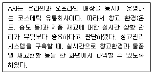
- 시스템자원관리
- 주문처리집계
- 항온항습센서
- 재고관리통계
- 대시보드
(정답률: 37%)
72. 4차 산업혁명 시대에는 다양한 인공지능 알고리즘을 활용해 혁신적인 유통 솔루션이 개발되고 있다. 유통 솔루션 개발에 활용되는 다음의 알고리즘 중 딥러닝이 아닌 것은?
- CNN(Convolutional Neural Network)
- DBN(Deep Belief Network)
- RNN(Recurrent Neural Network)
- LSTM(Long Short-Term Memory)
- GA(Genetic Algorithm)
(정답률: 32%)
73. 전형적인 조직구조는 피라미드와 유사하며 조직 수준별로 의사결정, 문제해결, 기회포착에 요구되는 정보유형이 각기 다르다. 조직구조를 3계층으로 구분할 때, 다음 중 운영적 수준에서 이루어지는 의사결정과 관련된 정보활용 사례로 가장 옳지 않은 것은?
- 병가를 낸 직원이 몇 명인가?
- 코로나19 이후 향후 3년에 걸친 고용수준 변화와 기업에 미치는 영향은?
- 이번 달 온라인 쇼핑몰 구매자의 구매후기 건수는?
- 지역별 오늘 배송해야 하는 주문 건수는?
- 창고의 제품군별 재고 현황은?
(정답률: 50%)
74. 전자상거래에서 거래되는 제품들의 가격인하 요인으로 가장 옳지 않은 것은?
- 신디케이트 판매
- 경쟁심화에 따른 가격유지의 어려움
- 최저 가격 검색 가능
- 인터넷 판매의 낮은 경비
- 사이트의 시장점유율 우선의 가격 설정
(정답률: 53%)
75. 아래 글상자의 ( )안에 들어갈 내용을 순서대로 나열한 것으로 가장 옳은 것은?
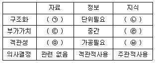
- ㉠ 어려움, ㉡ 쉬움, ㉢ 적음, ㉣ 많음, ㉤ 객관적, ㉥ 주관적
- ㉠ 쉬움, ㉡ 어려움, ㉢ 적음, ㉣ 많음, ㉤ 객관적, ㉥ 주관적
- ㉠ 어려움, ㉡ 쉬움, ㉢ 많음, ㉣ 적음, ㉤ 주관적, ㉥ 객관적
- ㉠ 쉬움, ㉡ 어려움, ㉢ 많음, ㉣ 적음, ㉤ 주관적, ㉥ 객관적
- ㉠ 어려움, ㉡ 쉬움, ㉢ 적음, ㉣ 많음, ㉤ 주관적, ㉥ 객관적
(정답률: 53%)
76. A사는 기업활동에 관련된 내외부자료를 관리 영역별로 각기 수집·저장관리하고 있다. 관리되고 있는 자료를 한 곳에 모아 활용하기 위해서, 자료를 목적에 맞게 적당한 형태로 변환하거나 통합하는 과정을 거쳐야 한다. 수집된 자료를 표준화시키거나 변환하여 목표 저장소에 저장할 수 있도록 도와주는 기술로 가장 옳은 것은?
- ETL(Extract, Transform, Load)
- OLAP(Online Analytical Processing)
- OLTP(Online Transaction Processing)
- 정규화(Normalization)
- 플레이크(Flake)
(정답률: 42%)
77. 아래 글상자의 ( )안에 공통적으로 들어갈 용어로 가장 옳은 것은?
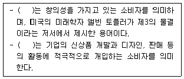
- 파워 크리에이터(power creator)
- 크리슈머(cresumer)
- 얼리어답터(early adopter)
- 에고이스트(egoist)
- 창의트레이너(kreativitäää)
(정답률: 61%)
78. GS1 표준 식별코드에 대한 설명으로 가장 옳지 않은 것은?
- 식별코드는 숫자나 문자(또는 둘의 조합)의 열로, 사람이나 사물을 식별하는데 활용
- 하나의 상품에 대한 GS1 표준 식별코드는 전 세계적으로 유일
- A아이스크림(포도맛)에 오렌지맛을 신규상품으로 출시할 경우 고유 식별코드가 부여되어야 함
- 상품의 체적정보 또는 총중량의 변화가 5% 이하인 경우 고유 식별코드를 부여하지 않음
- 상품 홍보 또는 이벤트를 위해 특정기간을 정하여 판매하는 경우는 고유 식별코드를 부여하지 않음
(정답률: 45%)
79. 아래 글상자의 ( ) 안에 들어갈 용어로 가장 옳은 것은?
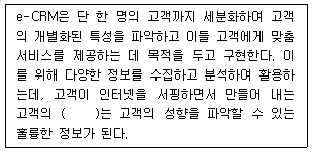
- 웹 로그(Web log)
- 웹 서버(Web Server)
- 웹 사이트(Web Site)
- 웹 서비스(Web Service)
- 웹 콘텐츠(Web Contents)
(정답률: 65%)
80. 전자상거래 용어에 대한 해설로 가장 옳은 것은?
- 온라인 쇼핑몰 - 컴퓨터 등과 정보통신 설비를 이용하여 재화 또는 용역을 거래할 수 있도록 설정된 가상의 영업장
- 모바일 앱 - 모바일 기기의 인터넷 기능을 통해 접속하는 각종 웹사이트 중 모바일 환경을 고려하여 설계된 모바일 전용 웹사이트
- 모바일 웹 - 스마트폰, 스마트 패드 등 스마트 기기에 설치하여 사용할 수 있는 응용 프로그램
- 종합몰 - 하나 혹은 주된 특정 카테고리의 상품군만을 구성하여 운영하는 온라인쇼핑몰
- 전문몰 - 각종 상품군 카테고리를 다양하게 구성하여 여러 종류의 상품을 구매할 수 있는 온라인쇼핑몰
(정답률: 61%)
81. 유통업체에서 비즈니스 애널리틱스(analytics)의 유형에 대한 설명으로 가장 옳지 않은 것은?
- 리포트(reports)는 비즈니스에서 요구하는 정보를 포맷화하고, 조직화하기 위해 변환시켜 표현하는 것이다.
- 쿼리(queries)는 데이터베이스로부터 정보를 추출하는 주요 매커니즘이다.
- 알림(alert)은 특정 사건이 발생했거나, 이를 관리자에게 인지시켜주는 자동화된 기능이다.
- 대시보드(dashboards)는 데이터 분석결과에 대한 이용자 이해도를 높이기 위한 데이터 시각화 기술이다.
- 스코어카드(scorecards)는 숨겨진 상관관계 및 트렌드를 발견하기 위해 대규모 데이터를 분석하는 통계적 분석이다.
(정답률: 40%)
82. 수집된 지식을 컴퓨터와 의사결정자가 동시에 이해할 수 있는 형태로 표현하기 위해 갖추어야 할 조건으로 가장 옳지 않은 것은?
- 추론의 효율성
- 저장의 복잡성
- 표현의 정확성
- 지식획득의 용이성
- 목적달성에 부합되는 구조
(정답률: 62%)
83. 아래 글상자에서 설명하는 인터넷 서비스의 종류로 가장 옳은 것은?
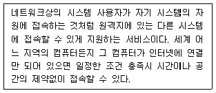
- FTP(File Transfer Protocol)
- Gopher
- Telnet
- Usenet
(정답률: 38%)
84. RFID 도입에 따른 제조업자 측면에서의 이점으로 가장 옳지 않은 것은?
- 재고 가시성
- 노동 효율성
- 제품 추적성
- 주문 사이클 타임의 증가
- 제조자원 이용률의 향상
(정답률: 63%)
85. 아래 글상자에서 공통적으로 설명하는 개념으로 가장 옳은 것은?
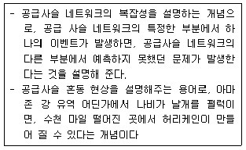
- 파레토의 법칙(Pareto’s principle)
- 기하급수 기술(exponential technology)
- 메트칼프의 법칙(Law of Metcalfe)
- 규모의 경제(economy of scale)
- 나비효과(butterfly effect)
(정답률: 69%)
86. 아래 글상자에서 설명하는 유통정보시스템으로 가장 옳은 것은?
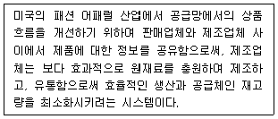
- QR(Quick Response)
- ECR(Efficient Consumer Response)
- VMI(Vendor Management Inventory)
- CPFR(Collaborative Planning, Forecasting and Replenishment)
- e-프로큐어먼트(e-Procurement)
(정답률: 58%)
87. 아래 글상자의 괄호 안에 공통적으로 들어갈 용어로 가장 옳은 것은?
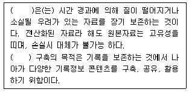
- 디지털아카이브
- 전자문서교환
- 크롤링
- 클라우드저장소
- 기기그리드
(정답률: 40%)
88. 노나카의 SECI모델을 근거로 아래 글상자의 내용 중 외재화(externalization)의 사례를 모두 고른 것으로 가장 옳은 것은?
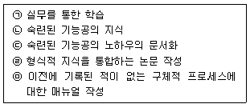
- ㉠, ㉡
- ㉡, ㉣
- ㉢, ㉤
- ㉠, ㉢, ㉤
- ㉡, ㉣, ㉤
(정답률: 55%)
89. e-비즈니스 모델별로 중점을 두어야할 e-CRM의 포인트에 관한 설명 중 가장 거리가 먼 것은?
- 서비스모델의 경우 서비스차별화나 서비스 이용 행태 정보제공을 고려한다.
- 상거래모델의 경우 유사커뮤니티에 대한 정보제공을 고려한다.
- 정보제공모델의 경우 맞춤정보제공에 힘쓴다.
- 커뮤니티 모델의 경우 회원관리도구 제공에 힘쓴다.
- 복합모델의 경우 구성하는 개별모델에 적합한 요소를 찾아 적용시킨다.
(정답률: 50%)
90. POS 시스템에 대한 설명으로 가장 옳지 않은 것은?
- POS 시스템은 유통업체에서 소비자의 상품구매 과정에서 활용되는 판매관리 시스템이다.
- POS 시스템으로부터 얻은 데이터는 유통업체에서 판매전략 수립에 활용된다.
- POS 시스템에서 바코드의 정보를 인식하는 스캐너(scanner)는 출력장치이다.
- POS 시스템은 시간별, 주기별, 계절별 상품의 판매 특성을 파악하는데 도움을 제공한다.
- 제조업체는 유통업체로부터 협조를 얻어 POS 시스템으로부터 얻은 데이터를 공유할 수 있고, 이를 통해 제품 제조전략을 수립하는데 도움을 제공한다.
(정답률: 59%)